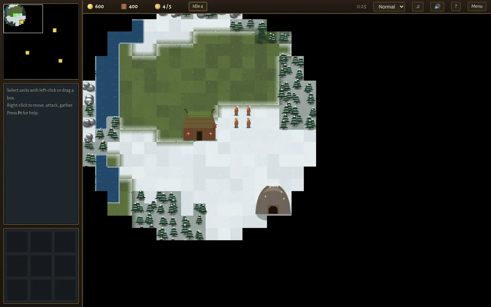

Featured · Real-time strategy
Norsecraft
A browser RTS in the spirit of the 90s classics: Vikings against frost giants, with base building, an economy, armies and a five-chapter campaign. It's about 9,700 lines of dependency-free JavaScript.
- A* pathfinding on a tile grid with a binary-heap open set
- Computer opponent with four difficulties that runs its own economy, build order and attack waves
- Fog of war, minimap, heroes, spells, naval units and save/load with autosave
- Touch controls and an offline-capable PWA, so it installs to a phone home screen
- All sprites, music and unit voices are generated in code (Canvas + Web Audio)
JavaScriptCanvas 2DWeb AudioService WorkerGame AI